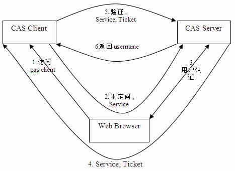
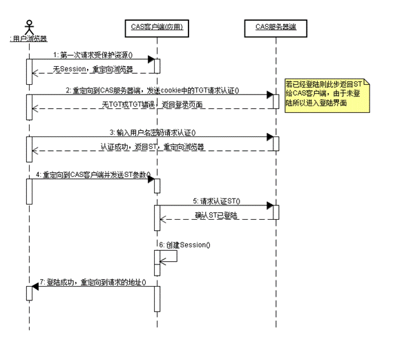

缘起
这个标题是在呼应@MT的为什么LTI应该成为你的LMS的一部分？
@MT在上面这篇博文中写道：
一个独立的开发商不可能提供所有的学校和组织需要的学习工具。因此，从不同开发商整合多种工具的能力对于学习系统来说变得必须。
@MT对学习系统的见解，我一直十分佩服，每次交流，都受益匪浅。很喜欢上边的这句话，一个系统在架构设计的时候，如果考虑到日后与其他系统协作的可能，那么这种考虑会让它变得灵活许多.保持一种开放的心态，而不是试图自己实现所有的功能，臆想所有的场景，揣度用户心理与习惯。
开放性与对协作的友好，也许正是应对变化的最佳策略，这也是我喜欢Unix/Linux的原因，当然也是我很喜欢Open edX的原因。
让系统保持开放性，增强与外部系统交互的能力，十分有利于一个系统的长期运行，而不是因为外部的变化而迅速被淘汰。
回顾
我们在上篇文章（教育信息化、信息孤岛与身份认证）里提到,CAS对于整合异构系统是有意义的，它解决了统一身份认证的问题，让用户在异构系统中穿梭感觉不到，一致性体验很好
如果LMS支持CAS（CAS Client),那么它将可能轻易与其他系统整合，外部看去浑然一体,或者至少为将来的系统之间的整合铺平道路
CAS概述
CAS来自耶鲁大学,当前的最新版本未3.0，目前由Jasig组织维护，在美国高校中被广泛采用,因此Open edX默认支持的三种外部认证中就包括它(另外两种是SSL Client Certificates和Shibboleth，参考Setting Up External Authentication)
我们先摘录维基百科的一段介绍:
集中式认证服务（英语：Central Authentication Service，缩写CAS）是一种针对万维网的单点登录协议。它的目的是允许一个用户访问多个应用程序，而只需提供一次凭证（如用户名和密码）。它还允许web应用程序在没有获得用户的安全凭据（如密码）的情况下对用户进行身份验证。“CAS”也指实现了该协议的软件包。
我们可能需要先解释下什么叫单点登录
单点登录
单点登录（Single Sign On），简称为 SSO，是目前比较流行的企业业务整合的解决方案之一。SSO的定义是在多个应用系统中，用户只需要登录一次就可以访问所有相互信任的应用系统。
单点登录一般的实现方案是通过使用ticket，认证系统能识别出用户是否登录，从而只需要登录一次就能访问所有受认证系统信任的应用。因此CAS只是实现SSO的一中协议。我们也可以用SAML，以及当前很流行的JWT来实现SSO
CAS原理
CAS由三部分组成，分别为：
- Web Browser
- CAS Client
- CAS Server
协议过程如下如所示

请求认证时序图为

上图中TGC表示Ticket Granted Cookie,ST表示Service Ticket
在我最近的使用场景中，CAS Client是Open edX，其他的CAS Client还包括高校的其他系统。而CAS Server由校方提供，主要对接了教务数据库。
这里陈述一下我之前的一个误解，不知道大家是否也存在，我以为CAS是无法跨域的，A,B两个应用得在同个主域下才可以（通过使用子域名），因为cookie不能跨域，其实是CAS是可以跨域的。
由于CAS Server的存在，起了中介者的作用，使跨域成为可能。用户访问过应用A之后，已经和CAS Server建立了会话（CAS Server上有session，而浏览器记录了和这个域名相关的cookie），这时候用户访问应用B，假设没登陆应用B，则用户被重定向到CAS Server，由于访问A时建立了会话，所以将拿到tickit，之后的过程就和上边一样了。
同时补充一点关于CAS Server的说明，CAS Server专注于认证，至于认证的依据是什么，CAS支持许多方案，包括数据库，LDAP等
此外我们还应该知道，使用CAS不影响web应用内部的会话机制，应用A,B都有各自的session，这样一来CAS很像一个外插设备，不会干扰既有系统，我们需要做的只是在既有web应用内实现CAS Client，目前已经有许多开源实现，几乎可能整合到任何语言里
而CAS Server也有成熟的开源实现，可以直接使用，诸如著名的Jasig/cas
Jasig/cas
Jasig/cas是github上关注度最高的CAS Server开源实现，主页在这里
Jasig/cas功能十分完备
- 可插拔地支持LDAP, database等
- 支持多种协议，诸如CAS, SAML, OAuth, OpenID
- 之多跨平台的CAS Client，支持Java, .Net, PHP, Perl, Apache等
- 集成了uPortal, Liferay, BlueSocket, Moodle, Google Apps等
更多细节参考主页
附录：CAS实现
以下我们只关心开源实现
CAS Server
- Python
- Java
- Ruby
CAS Client
- Python
- Java
- Ruby
- .NET
- PHP
搭建cas服务
- apereo/cas
- dockerized-caswebapp
- docker-cas_mysql:也是基于Jasig/cas，通过端口映射，docker内容器也能使用外部数据库
- lynx https://localhost:49163/cas/login，只能访问https
- 需要直接映射端口，无法使用nginx代理和ngrok
- Central Authentication Server (CAS)
- INSTALL JASIG CAS IN UBUNTU 14.04